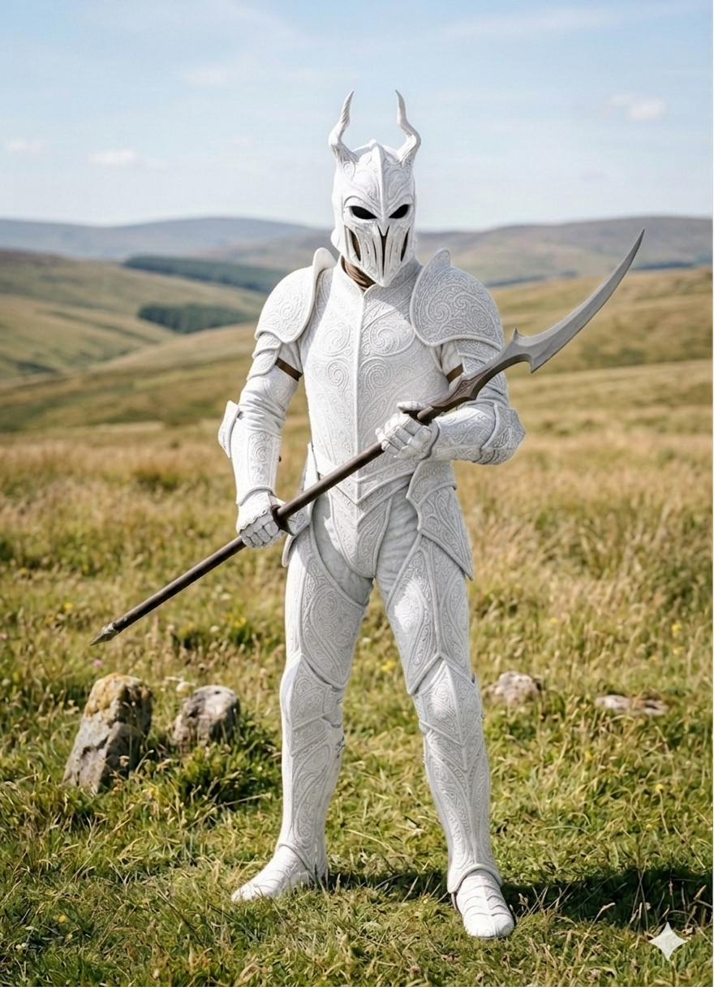
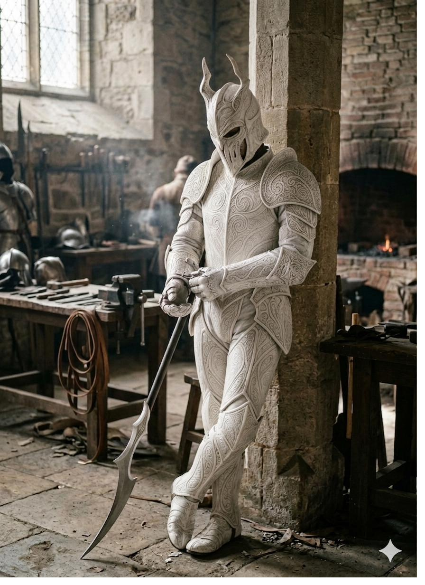
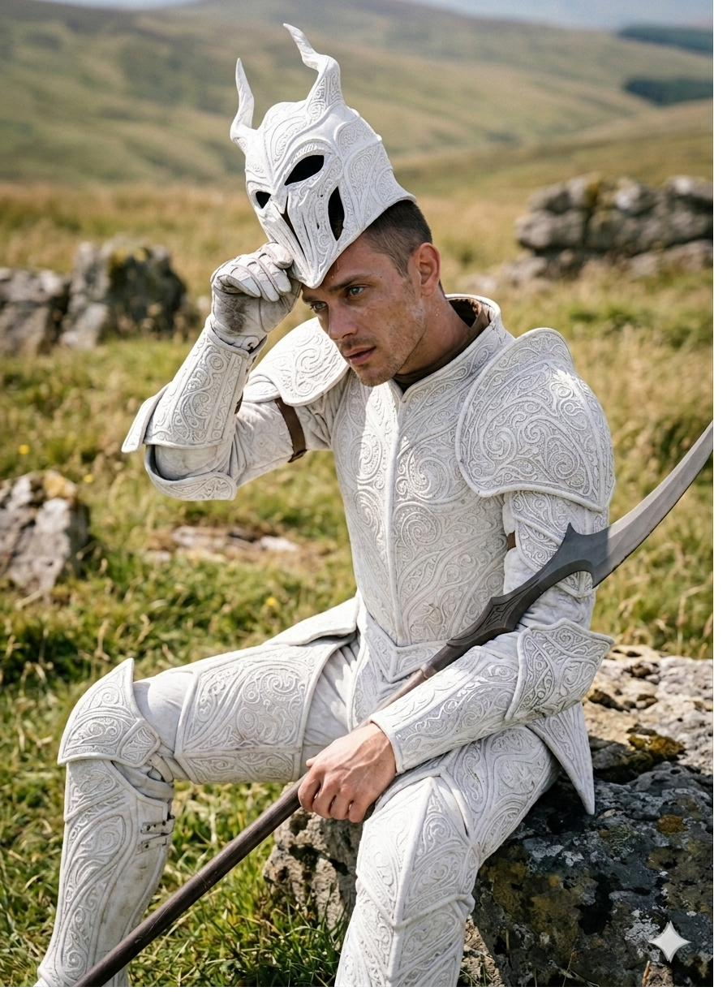
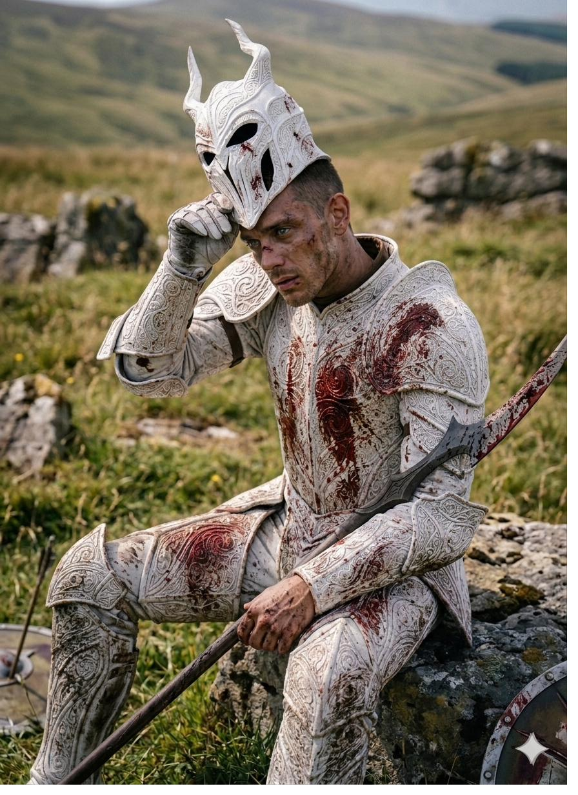
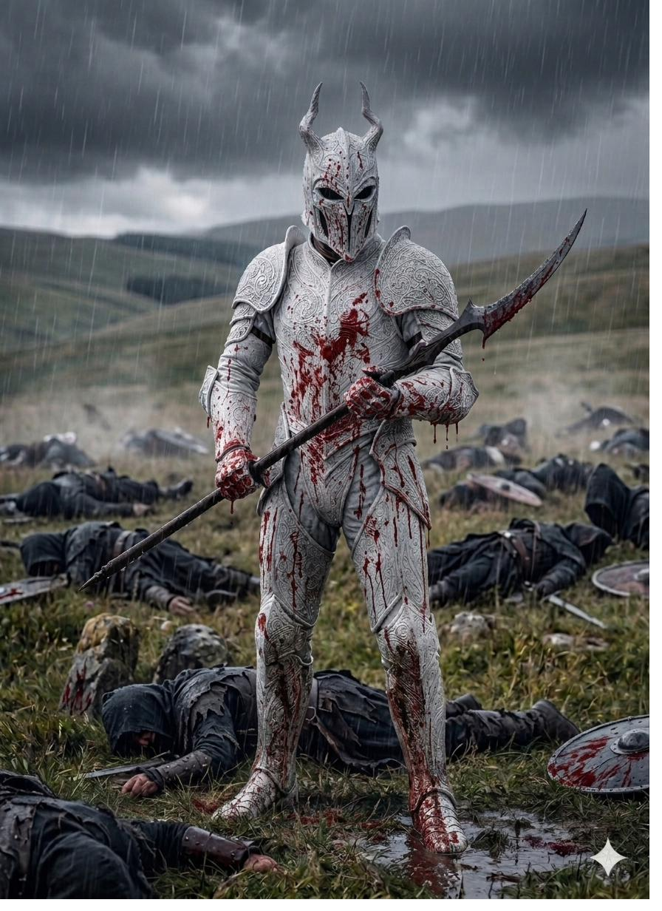

← House Locsird · Toraiyo
The Lost Prince — Character Encyclopedia
Royal House Locsird · Toraiyo
Lessio
Locsird
★ The Rebirth
Prince of Gemlyria
The Lost Prince
The Rebirth
The kingdom had slowly, painfully learned to hold his absence as a permanent condition — his name shifting over time from a missing child to a symbol to something closer to myth. And here he was. In the sand. Bleeding. His eyes throwing white light into the fog.
◆ ◆ ◆
The youngest child of King Jonzhento Locsird and Queen Sonya-Lee Toraiyo. Taken on the morning of his second birthday and presumed dead before his third. Returned at sixteen, wounded on a beach in Aurora, with no memory of the fourteen years between.
The kingdom had been quietly, carefully learning to grieve for him for a decade and a half — his name shifting from a missing child to a symbol to something closer to myth. Every high family had silently adjusted its political calculations to a future without him. And then he came back.
He is the cosmic condition occurring through this body. Not the condition itself — the vessel. The Rebirth name is literally accurate.
◆ ◆ ◆
Hair
Dark, cropped close to the scalp.
Eyes
Pale almost to the point of colourlessness — light grey, nearly white. Glow white under power, distress, or pain.
Build
Slight at sixteen — still growing into himself. Sharp-featured, clean-lined, long in the jaw. The kind of face that carries its structure without softness.
Bearing
Quiet. Watchful. Self-diminishing by default. Even barely conscious there is something in him that does not read as young in the way that most sixteen-year-olds read as young.
Voice
Soft. Honest. Sparing with words. When he speaks, people listen because he so rarely does.
◆ ◆ ◆
Trauma-laden, introspective, kind-hearted. Dropped into a fully-formed life sixteen years in the making with none of the formation that should have preceded it. He second-guesses himself constantly — not from weakness of character but from disorientation. He minimizes himself by reflex. He apologizes for occupying space.
Underneath all of this is a foundation no one — not even Lessio — yet recognizes. His kindness, his introspection, his gentleness are not coping mechanisms. They are the architecture of who he actually is. The wisdom precedes the knowledge. He is practising the right relationship with his power long before he understands what that power actually is.
The shyness will fade as the foundation surfaces. The kindness will not.
◆ ◆ ◆
IV.The Three-Tier Power Ladder
The series establishes a progressive power scale that the reader experiences in stages.
I
Apex Power
World-shaking. The upper limit of known human capability. Sonya-Lee shattering the Astravar curtain wall is the benchmark. The most feared beings in Gemlyria.
II
Thalassyr
Renders Apex power irrelevant. The Royal Navy's standing doctrine is not deploy your strongest Apex — it is flee. The ceiling of the known world.
III
Lessio
Makes the Thalassyr look like a goldfish. Sixteen years old. Power still unlocking gradually. No true ceiling — only the ones he places on himself.
◆ ◆ ◆
Lessio has no true power cap. Every time he breaches a boundary, he resets quietly: okay, so that's what I'm capable of. He carries each new ceiling with the same certainty he carried the last one. The pattern repeats across the entire series.
The reader catches on before he does. Somewhere mid-series they notice — he's done this before, the ceiling always moves. They are then in the position of watching someone of literally limitless power live an entirely bounded life, holding back, believing he is being responsible.
When he finally sees it — no more ceiling, just open sky in every direction, forever — his response is not peace, and it is not terror. It is understanding. A stoic calm that comes with deep knowledge of the world and of himself. The revelation does not create the calm. The calm was already there. The revelation only gives it a name.
The destination is not power. The destination is wisdom.
◆ ◆ ◆
White ceremonial-grade plate, every panel inscribed with intricate scrollwork. The horned helm. The polearm with its curved blade. What the kingdom had imagined for him for fourteen years, made real.

As It Was Meant to Be Seen
White plate, untouched. Helm on, polearm ready. The image the kingdom had been holding for him for fourteen years.

Between the Fights
Inside the smithy. Stone walls, forge glowing. This is where the armor lives. This is where it was made.

Before
Helm pushed back. The kid beneath the legend, sitting on a rock in a green field, polearm across his lap. Not yet bloodied.

After
Same rock. Same posture. The white plate now red across chest and thigh. He looks at nothing. The cost is on him before it is anywhere else.

After the Field
Rain-soaked. Scrollwork streaked with red. The legend, after.
◆ ◆ ◆
The prince out of armor. House colors at formal occasions, simple white and denim in private. The same person, smaller than what he can do.

Formal · Crown Colors
Imperial purple velvet blazer, gold bow tie, gold pocket square. The Royal House on his person.
Casual · The Person Beneath
White shirt, denim, leather belt. Sixteen. Nothing on his shoulders but his shirt.
◆ ◆ ◆
Family, bond, and the people who hold him.
Mother · The Bearer
She lost him at two. Got him back at sixteen. She holds him through his sleep breaches, the marks on her hands visible against his skin. He has caught only fragments of what she is. Nothing has prepared him for the marks. He is the only one in the family who could ever ask her — because the fourteen-year gap stripped him of the years that taught everyone else not to.
Father · The King
Reverent toward his returned son. The first king of the newly unified kingdom of Gemlyria, deeply protective, gentle by default. Lost him for fourteen years and now navigates the impossible work of being a father to a child who is also the Rebirth.
Myrella Galmir
The Bond · Blood Mother
The first person to find him on the beach in Aurora. Pulled by an unnamed compulsion in the middle of the night, barefoot, no weapon, sprinting into fog. They share an unnamed biological-arcane bond operating below conscious thought on both sides. She is the only non-family member his body recognizes as familiar at an arcane-signature level. It will not be narratively explained for a long time.
Heir · Steady Presence
Primary caretaker and steadying presence. Her nighttime presence is canonically both emotional support and functional necessity given his breach risk. She inherited the Heir role by circumstance — Emerald Locsird was meant to bear it. She holds her brother and her burden in the same hands.
Sister · Strained
Reflexively protective from his infancy — fast and decisive. The trauma of the abduction has left her strained with him in ways she has not resolved. The protection reflex still exists alongside the strain. Both are real.
Sister · Warm Steady
One of the sisters Sonya-Lee Toraiyo leans on to sustain the warmth the Trials stripped from her parenting. Rhyca's patience and warmth are her baseline, not a mode she switches into — she is a primary nighttime presence in his care, and her steady, unbroken attention is what he does not have to ask for.
Sister · Fiery Direct
Fiery and quick, of which Sonya-Lee Toraiyo is the natal source. Mez-tah meets him without softening the encounter — direct, unafraid to be blunt, unbothered by the weight of the Rebirth name. For a boy who is handled by almost everyone, being simply spoken to by a sister who does not manage him is its own relief.
Sister · "The Babies"
Four years apart — close enough in age to operate as peers rather than older/younger. Sonya-Lee Toraiyo grouped them together as the babies. Their bond will be unlike anything else in his life: neither managing him, neither mothering him. Just present, peer to peer.
Holly Galmir
Future Wife · Arranged
Wants the marriage as a trophy — prestige and political victory. Her dominance instinct is directed at the marriage as territory and Myrella Galmir as rival, never at Lessio himself. Most alive in exactly the spaces that cost him most: public eye, events, gatherings, the full weight of visible royal life.
Sister · The Abductor
The instinctive somatic fear is sourceless and pre-cognitive — he cannot trace it. As his foundation builds, the instinct toward her transmutes from dread to cold compounding rage. He does not know she exists at series open. He will learn of her, of Emerald Locsird's death, and of Ruby Toraiyo's existence simultaneously.
Sister · Deceased
The second mother to him as an infant. The one he reached for, who carried him and settled him as simply her brother. He has no memory of her. His blankness on the subject is a source of quiet pain for those who remember — and may live in him as an unnameable absence whose origin he cannot identify.
Sister · Estranged
Self-exiled to West Island after the catastrophic blowout with Sonya-Lee Toraiyo in the immediate aftermath of the abduction. He does not know she exists. Her arc involves quietly navigating tense family dynamics to rebuild proximity to him without drawing too much attention to herself.